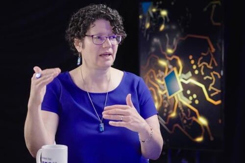

Tanya Berger-Wolf, director of Ohio State’s Translational Data Analytics Institute and founding director of the NSF-funded Imageomics Institute, was elected a Fellow of the Association for the Advancement of Artificial Intelligence (AAAI). The honor recognizes significant, sustained contributions to the field of AI.
Berger-Wolf is known for pioneering “imageomics,” an approach combining computer vision, machine learning and biological knowledge to extract measurable traits from images for ecology and conservation. Her work underpins global wildlife monitoring efforts and open-source tools used by researchers and citizen scientists to track species, study behavior and inform management decisions.
At Ohio State, Berger-Wolf also co-leads the AI and Biodiversity Change (ABC) Global Center, coordinating teams that develop trustworthy, explainable AI for biodiversity monitoring at scale. She has authored widely cited research on AI for science, led multi-institution collaborations and advocated for responsible data practices that make scientific results reproducible and useful to communities and policymakers.
Election to AAAI Fellow is one of the organization’s highest recognitions. Berger-Wolf joins a select cohort honored for advancing the theory and practice of artificial intelligence. A formal presentation will occur at an upcoming AAAI event.